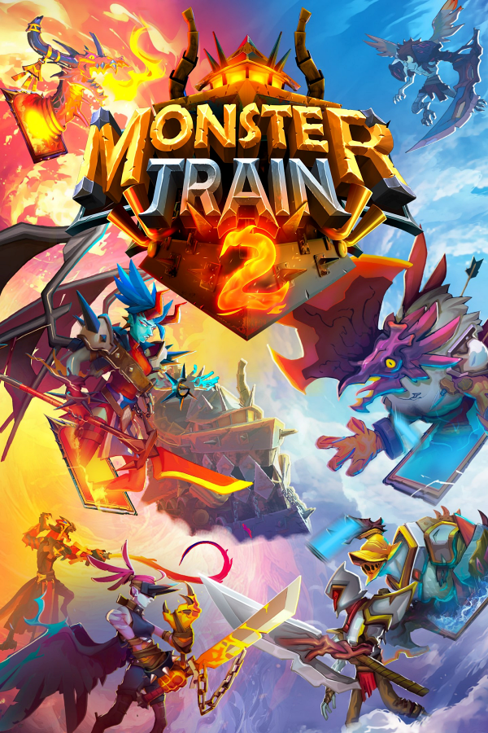

Monster Train 2
Every archived year-end list appearance, including placement and points earned.
About the Game
Powerful beings known as Titans have seized control of Heaven. A makeshift alliance is formed between former angels and demons, who must learn to work together against their common foe. Now, you must command these clans aboard newly forged trains, and embark on your journey through Hell, Heaven, and the Abyss, to defeat the Titans before they destroy this world. Chaos awaits beyond the gates! You’re in command! Choose from a selection of five brand new clans, each with its own unique strengths and gameplay to forge strategies fitting your personal playstyle. With three vertical levels to defend against dangerous new enemies, you’ll need to recruit powerful new units, upgrade cards, and experiment to survive. Can you defeat the all-new and ultra-challenging Titans? Reach your deck’s full build potential with all new Room and Equipment Cards. Room Cards add impressive boosts to your train, allowing you new strategic advantages over your foes. Equipment Cards can be applied to units, giving them a variety of bonuses to aid you in battle! The Covenant Outpost is the bustling hub that you’ll visit after each run. From here, you’ll have access to Monster Train 2’s core features, as well as experience character interactions that move the story forward. Pyre Hearts: Each Pyre Heart brings unique functionality to gameplay. Unlocking them not only provides another way to customize your run before departing, but also plays a key role in advancing the story. Dimensional Challenges: Ready for a new twist on your adventure? This mode offers handcrafted challenges, new Mutators, and unique cosmetic rewards to be earned as you complete them. Train Customization: Unlock new parts for your train and customize it to suit your personal style. The Logbook: In addition to recording completion goals, the improved Logbook also now includes new features, such as enemy information, collection objectives, and more ways to compare your achievements against your friends. Daily Challenges: Take on a new challenge every day with a hugely modified run featuring brand new mutators, as well as some returning old favorites. Compete globally and against friends, and climb the leaderboards with a skill-focused scoring system. Celestial Alcoves: The rapid expansion of the Rail has attracted many new visitors to Hell. Encounter a wide variety of random events with exciting gameplay and maybe even a few surprises from outside of the Monster Train universe. One of the most requested features by Monster Train players is here! Travel the Rails with ever-increasing difficulty to test your skills and see how long you can survive. You can even compare your stats against your friends!
| Released | 2025-05-21 |
|---|---|
| Developer | Shiny Shoe |
| Publisher | Big Fan Games |
| Genres | Strategy, Indie |
| Platforms | PC |
SingleplayerSteam AchievementsMultiplayerFull controller supportSteam CloudFantasyDifficultPvPReplay ValueChoices MatterColorfulRoguelike
Where to Buy
Game information provided by RAWG.
Points by Year
List History
| Year | Source | List | Placement | Points |
|---|---|---|---|---|
| 2025 | FullCleared | FullCleared's Favorite Games of 2025 | 14 | 3 |